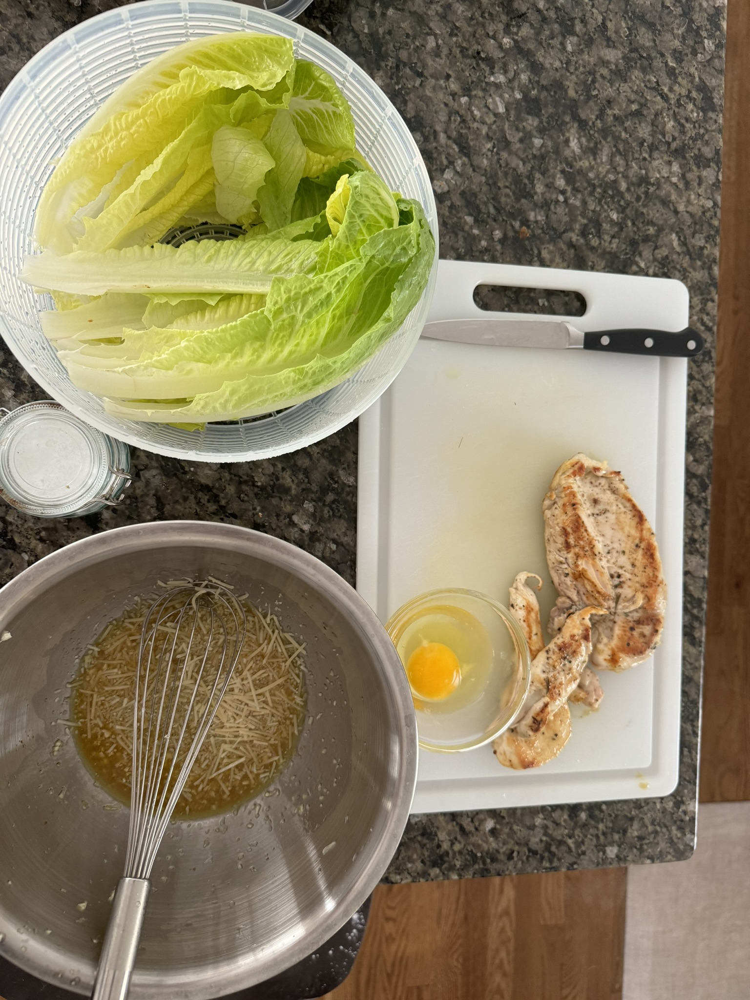
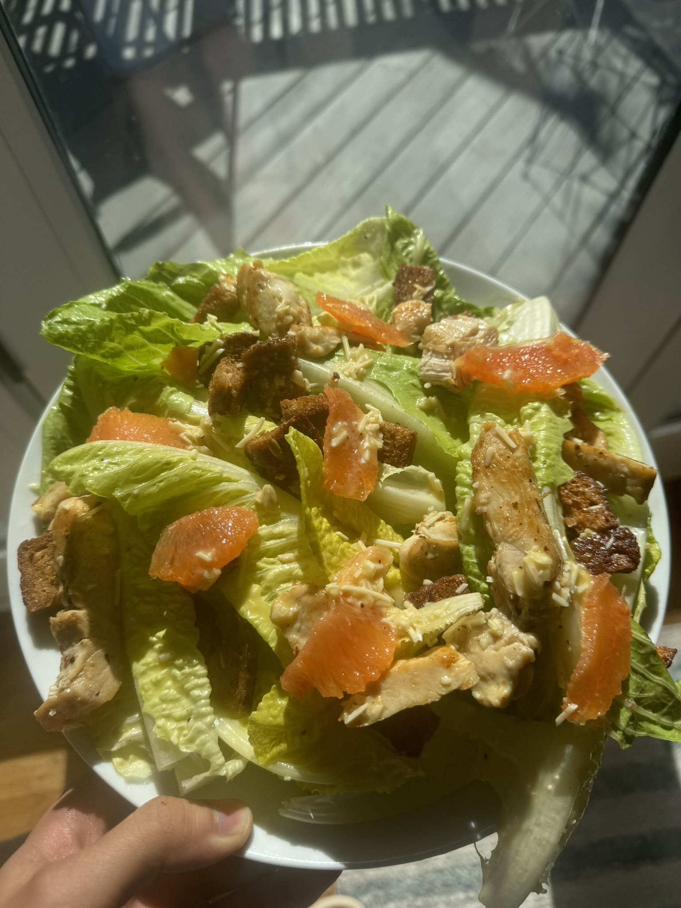

I was watching a Kenji Lopez-Alt video on Caesar salad the other day and got inspired. Problem is, I'm out of anchovies and honestly, whipping up a raw egg dressing during a bird flu pandemic? We ball, but carefully.
The magic of Caesar dressing is all about emulsification. Basically, you're creating a stable mixture where typically unmixable ingredients come together. The egg yolk is the hero here - it's packed with lecithin, a natural emulsifier that helps bind oil and acid together. When you whisk vigorously, you're creating tiny droplets of oil suspended in the egg and acid, creating that creamy, smooth texture that makes Caesar dressing so iconic.
Ingredients
- Romaine lettuce
- Garlic
- Dijon mustard
- Worcestershire sauce
- Parmesan cheese
- Croutons (homemade)
- Lemon
- Olive oil
- Salt and pepper
- Egg (pasteurized, playing it safe)
Prep Notes
- Infused olive oil with grated garlic, then strained
- Tossed chopped multigrain bread in garlic oil
- Prepped extra croutons for future use
- Whisked dressing carefully to avoid bird flu anxiety
- Used pasteurized egg for extra safety
Making croutons is legit the best part. I grated garlic directly into olive oil, let it sit for a bit, then strained out the solids. Chopped up some multigrain bread, tossed it in the garlic-infused oil, and threw it in the oven. Pro tip: make extra. These things are gold and keep well in an airtight container.
The dressing was a bit of a gamble. No anchovies meant I had to get creative. Worcestershire sauce became my secret weapon. A good hit of Dijon, some grated Parmesan, a squeeze of lemon - we're building complexity without traditional ingredients. The key is layering flavors and understanding how each ingredient contributes to the final taste.
Ratings:
Honestly, not bad for a random cooking experiment. Might invest in some anchovy paste for next time. Or maybe just embrace the improvisation.
the mango cheescake bingsoo afterwards was yum: :P